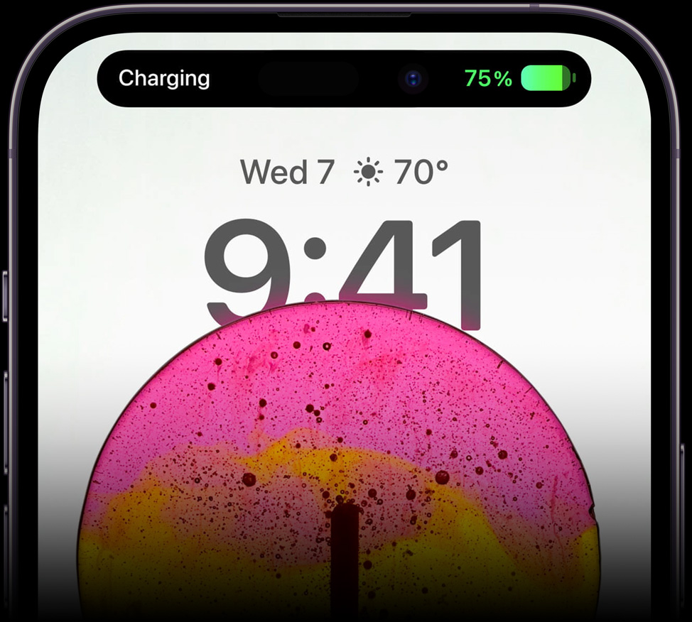
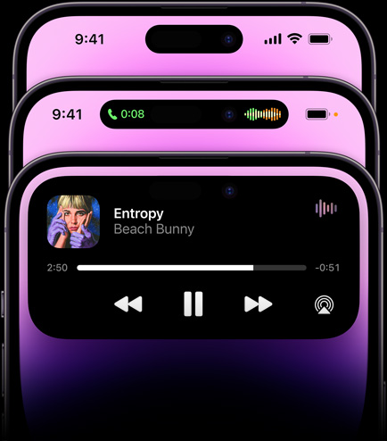
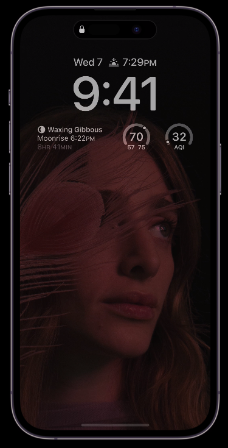
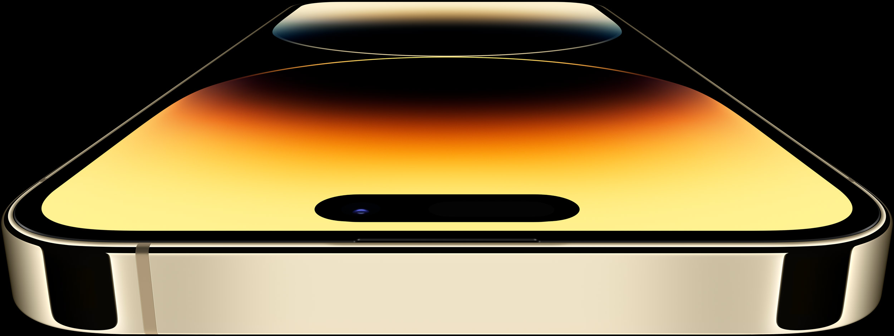
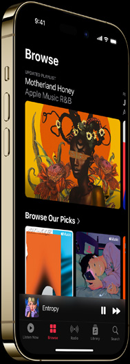
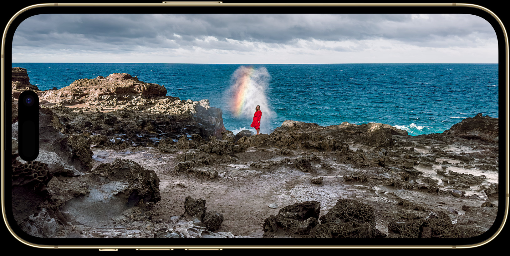
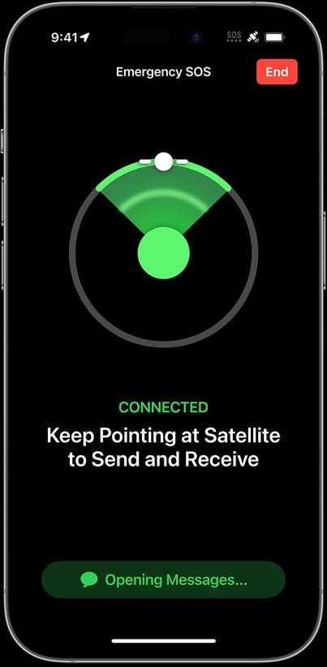
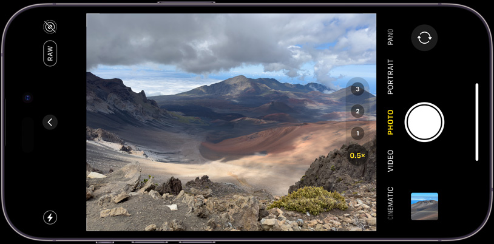

Được thiết kế cho độ bền.
Với kính Ceramic, cứng hơn bất kì loại kính điện thoại thông minh nào khác. Kháng nước. Thép không gỉ. Kích thước màn hình 6.1 và 6.7 inch. Tất cả nằm gọn trong bốn màu sắc.
Với kính Ceramic, cứng hơn bất kì loại kính điện thoại thông minh nào khác. Kháng nước. Thép không gỉ. Kích thước màn hình 6.1 và 6.7 inch. Tất cả nằm gọn trong bốn màu sắc.
 (1).png)
iPhone cũng được thiết kế để bảo vệ quyền riêng tư của bạn và giúp bạn kiểm soát những gì bạn chia sẻ cũng như những người bạn chia sẻ thông tin đó với người khác. Đảm bảo bảo mật tuyệt đối.
Gặp gỡ
gương mặt mới
của iPhone.
gương mặt mới
của iPhone.
Giới thiệu Dynamic Island, một cải tiến thực sự của Apple, đó là phần cứng và phần mềm và một thứ gì đó ở giữa. Nó tạo ra âm nhạc, điểm số thể thao, FaceTime, v.v. - tất cả mà không đưa bạn ra khỏi những công việc bạn đang làm.

Chào mừng bạn đến với trải nghiệm thay đổi hình dạng, đa nhiệm, thay đổi giao diện tùy biến trên iPhone.

.png)
Dynamic Island kết hợp niềm vui và chức năng chưa từng có trước đây, hợp nhất các thông báo, cảnh báo và hoạt động của bạn vào một nơi tương tác. Nó được tích hợp trong toàn bộ iOS 16 — và có thể hoạt động với tất cả các loại ứng dụng — để hiển thị liền mạch những gì bạn cần, ngay khi bạn cần.
Trực quan, thú vị, dễ dàng sử dụng chiếc "Đảo động" này
Màn hình luôn bật.
Luôn luôn sẵn sàng.
Giờ đây, màn hình khóa của bạn luôn có thể xem được, vì vậy bạn không cần phải nhấn vào màn hình để luôn cập nhật thông tin.
Khi úp iPhone xuống hoặc để trong túi của bạn, màn hình sẽ chuyển sang màu tối để tiết kiệm pin.

Khi úp iPhone xuống hoặc để trong túi của bạn, màn hình sẽ chuyển sang màu tối để tiết kiệm pin.
Pin dùng cả ngày
.png)
Phông chữ của bạn.
Tiện ích của bạn.
iPhone của bạn.
Màn hình sáng hơn gấp 2 lần
dưới ánh nắng mặt trời.
Brilliant.


Đối với những ngày nắng chói chang, màn hình Super Retina XDR hiện đạt mức tối đa 2000 nit ngoài trời — sáng gấp đôi so với trước đây và là mức sáng tối đa cao nhất so với bất kỳ điện thoại thông minh nào. Vì vậy, nội dung được hiển thị sắc nét hơn.
Ảnh và video HDR cũng được tăng cường đáng kể — độ sáng tối đa lên tới 1600 nit, đưa iPhone ngang hàng với Pro Display XDR. Các bộ phim, chương trình và thậm chí cả những bộ phim bạn đã quay trên iPhone trông chân thực hơn bao giờ hết.

Công nghệ ProMotion cho phép tốc độ làm mới thay đổi từ 10 đến 120 lần mỗi giây. Nó tăng tốc một cách mượt mà và thông minh khi bạn cần hiệu năng đồ họa vượt trội và giảm tốc độ để tiết kiệm điện khi bạn không cần. Chiến thôi nào, các game thủ.
Các tính năng an toàn mới quan trọng mà chúng tôi hy vọng bạn sẽ không bao giờ cần đến.
SOS khẩn cấp
thông qua vệ tinh.
Yên tâm rằng, khi bạn rời khỏi nơi có dịch vụ di động hoặc Wi-Fi, iPhone sẽ cho phép bạn nhắn tin cho các dịch vụ khẩn cấp thông qua vệ tinh
Làm thế nào trên trái đất bạn có giao tiếp không thông qua vệ tinh?
Vệ tinh đang di chuyển mục tiêu với băng thông thấp. Có thể mất vài phút để tin nhắn được thông qua. Vì mỗi giây đều có giá trị, iPhone sẽ tải trước một số câu hỏi để đánh giá tình huống của bạn — chỉ cần nhấn để trả lời. Sau đó, nó chỉ cho bạn nơi cần trỏ để kết nối với vệ tinh.
Sau khi kết nối, iPhone sẽ tự động gửi câu trả lời, vị trí, ID y tế (nếu được thiết lập) và mức pin của bạn cho người điều phối.


Bạn phải ở ngoài trời với một cái nhìn rõ ràng về bầu trời.
Vì các vệ tinh đang di chuyển nhanh chóng trong không gian, iPhone sẽ chỉ cho bạn điểm cần duy trì kết nối của bạn — và tránh các vật cản như núi và tán lá rậm rạp.
Tính năng nhắn tin khẩn cấp qua vệ tinh được cung cấp miễn phí với iPhone 14 Pro trong hai năm.

Điện thoại của bạn.
Phong cách của bạn.
Hệ thống camera mới
Giới thiệu camera chính 48MP hoàn toàn mới với cảm biến 4 điểm ảnh tiên tiến.

iPhone 14 Pro nâng cao tiêu chuẩn cho những gì 48 megapixel có thể làm được — cung cấp độ phân giải gấp 4 lần trong ProRAW để mang lại chi tiết ấn tượng trong mọi ảnh cắt.
Cảm biến lớn hơn 65%
so với iPhone 13 Pro
Cảm biến bốn điểm ảnh trên ống kính chính tận dụng tối đa 48 megapixel bằng cách thích ứng với những gì bạn đang chụp.
Đối với hầu hết các bức ảnh, bạn muốn tối ưu hóa để chụp ánh sáng. Vì vậy, cảm biến mới nhóm bốn pixel lại với nhau thành một pixel lớn, thu thập nhiều ánh sáng hơn gấp 4 lần và tạo ra những bức ảnh đẹp hơn ngoạn mục ở kích thước 12MP thực tế.
Hãy tận dụng những cảm biến, nó có thể giúp bạn có thêm nhiều tùy chọn sáng tạo hơn để chụp và chỉnh sửa trong quy trình làm việc chuyên nghiệp.
Một mô hình máy học mới mang lại hình ảnh sắc nét hơn và ít nhiễu hơn cho chi tiết chưa từng có. Vì vậy, bạn có thể điều chỉnh lại ảnh của mình trong khi vẫn giữ được độ phân giải tuyệt vời.

Và đằng sau tất cả
Xin hãy gửi lời chào đến CPU mạnh mẽ nhất.